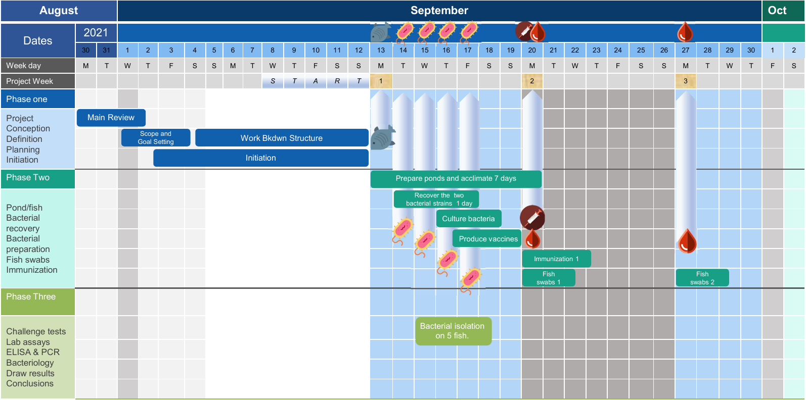
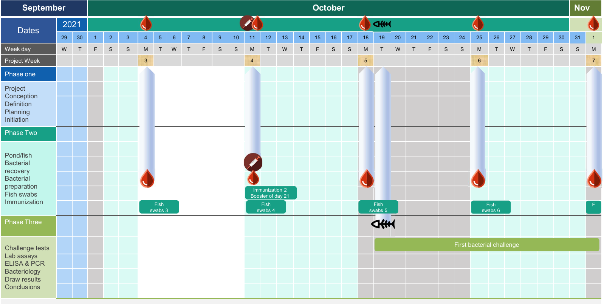
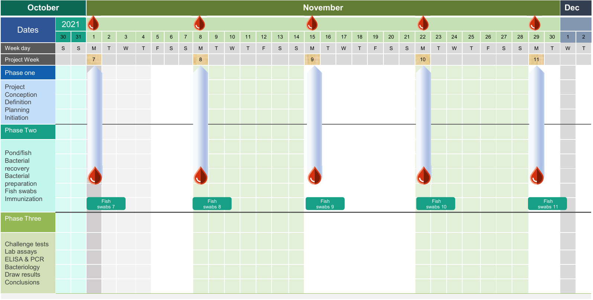

Chapter 3 Project organisation
3.1 Conceptual framework

Figure 3.1: Conceptual framework
In the initiation phase, the review of the existing literature on vaccination using inactivated vaccines, antibody response and immunology of cichlids was performed. In the planning phase, the list of raw materials was assessed and the methology used was defined: ponds preparation, the fish feeding regime, protocols for bacterial culture, protocol for candidate vaccine development, protocols for fish mucus swabs and blood sampling, protocols for antibody agglutination titration, ELISA, RT-PCR and the protocol for challenge tests. During the execution phase, the fish immune responses after vaccination by each of three candidate vaccines was monitored and associated relevant data were collected. The challenge test in vivo has been performed twice after vaccination (once after first dose, once after booster dose). The results of all the experiments are presented in the final master thesis paper. Finally, during the project closing phase, I have drawn conclusions from the compared vaccines efficiencies. And I have given recommendations on best vaccination protocol to provide the best protection against the two bacterial strains S.agalactiae and A.veronii.
3.2 Split of the work in workpackages
The work packages have been defined in order to split the research work in a list of tasks.
Figure 3.2: Work packages and tasks
3.3 Workflow
Figure 3.3: Work packages tasks flow chart
3.4 Experimental designs
Vaccination
The vaccination will be different for each of 4 experimental groups. Each group will include approximately 165 individuals kept in 4 medium aquaria/ponds. The first dose of vaccine will be given to all individuals in each group (Control, Sa, Av, Sa+Av). The second dose of vaccination (booster) will be given 3 weeks later (21 days after the end of the acclimatation of the fish to their experimental aquarium), again to each 4 groups.
Sampling
The sampling is done weekly for 12 weeks. It consists in the analysis of gene expressions levels by RT-PCR. To do so 3 animals of each group are scarified every week in order to obtain head kidney tissue and liver tissue. Moreover, 8 different animals are sampled blood and mucus but not killed.
Figure 3.4: Experimental design for fish vaccinations and bacterial challenges showing the 4 different groups representing the treatments, and the 8 different virtual subgroups. The subgroup is the unit that will be consumed after one challenge test.
3.5 Timelines
Horizontal
The horizontal timeline is shown below:
  Figure 3.5: The project planning horizontal timeline
Vertical
The timeline of the project with the different steps from the beginning to the end.
Link to the timeline: https://thesistimelinequentin.netlify.app/